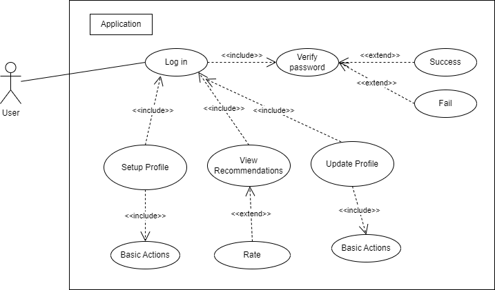

Recommender systems play an increasingly important role in the success of social media websites; Higher portions of
social websites traffic are triggered by recommendations and those sites rely on the quality of the recommendations
to attract new users and retain existing ones. In this report, we propose a Web application specification of a social recommender system which stores RDF data.
After a short introduction, we discuss in detail the functional requirements the application should implement, the system architecture, the user flow
and the user interface. In the last part, we mention and argument the security considerations we have to take into account, the scalability and performance by-passes techniques and
the deployment and future maintenance.
We conclude with summarizing the most important parts of the entire report, argumenting the development process and why the addressed concerns are solved using the proposed implementation.
Introduction
SoRe (Social Recommender) is a Web modular system able to recommend certain connections according to a
built-in knowledge graph
expressed in RDF and automatically built for a specific user, based on her/his social media profile(s) and
by considering multiple
similar features/properties: skills (excellent knowledge of certain areas like Web technologies + open
hardware), geographic location
(i.e. from Romania and Chile only), technical preferences (e.g., using free software), background info
(demographics, education,
occupation history, driving license, other competencies), hobbies (i.e. horror movies + classical music),
aversions (e.g.,
communication by phone, sport, politics), acquaintance and so on. The system should be “smart” enough to
improve recommendations based on various
methods such as user feedback, reasoning, and/or machine learning. The recommended items will be available
via a SPARQL endpoint.
Requirements
These following requirements form a foundation for developing and evaluating the web modular system. Each
requirement should be testable and measurable to ensure the system meets the specified criteria.
Functional Requirements
User Profile Creation
The system should allow users to create and update their profiles. This involves user registration by
creating an account in which various information about the user can be added.
Knowledge Graph Construction
The system must automatically build a knowledge graph for each user based on the imported data,
representing relationships between the user and various items/other users of interest.
Recommendation Generation
The system should generate personalized recommendations for users, based on their knowledge graphs,
considering features such as skills, geographic location, technical preferences, background information,
hobbies, acquintaces and aversions.
User Feedback Mechanism
Users should be able to provide feedback on received recommendations, influencing the future
recommendations of the system, taking into account liked and disliked users which a user has evaluated in the past.
SPARQL Endpoint Access
The system must expose a SPARQL endpoint through which users can query and retrieve their personalized
recommendations.
Continuous Improvement
The system should incorporate machine learning algorithms to continuously improve the recommendation internal metric
based on user interactions and feedback.
Non-functional Requirements
Performance
The system should respond to user queries within a reasonable time frame (under 3 seconds) to ensure a
responsive user experience.
Scalability
The system should be able to handle a growing number of users and an expanding knowledge graph without a
significant degradation in performance.
Security
User data, especially sensitive information obtained from social media profiles, must be securely stored
and sent. The system should implement encryption and access controls.
Reliability
The system should be available for use 99.9% of the time, minimizing downtime for maintenance or
unexpected issues.
User privacy
The system must adhere to privacy regulations and ensure the user data is handled responsibly. Users
should have control over the shared and used information for recommendations.
Adaptability
The system should be compatible with a variety of devices and browsers to ensure a seamless user
experience.
Maintainability
The system should be designed with a modular and maintainable code to facilitate updates, bug fixes, and
future enhancements.
System Architecture
Fig. 1: C1 diagram
Django Application
Responsibilities: Handles user interactions through a web-based user interface. Implements APIs for recommendation generation and user profile updates.
Components:
User Interface: Provides forms and views for user registration, profile management and
feedback submission.
User Authentification: Manages user login, registration, and profile updates using a
dedicated database for user information.
Recommendation API: Accepts requests from the Django application to generate
personalized recommendations based on user profiles and knowledge graphs.
Profile Update API: Receives and processes requests to update user profiles with new
information collected from social media platforms.
User Database (Django): A PostgreSQL database that stores user authentication and
registration
data.
Knowledge graph Database (Apache Jena Fuseki): Stores RDF-based knowledge graphs representing
relationships
between users and items of interest.
RDF Representation of Knowledge Graph
Format: Utilizes RDF (Resource Description Framework) to represent the knowledge graph.
Structure: Nodes represent entities (e.g., users, events, places) and edges represent
relationships
between entities.
Ontology: Defines a set of terms and their relationships, providing a standardized way to
represent
information.
User Registration Process
When a user registers, the Django application collects basic information and initiates the process.
The application accesses the Fuseki server to retrieve the user's knowledge graph.
Using the recommendation algorithm, the application generates personalized recommendations based
on the user's profile and knowledge graph.
Recommendations are sent back to the Django application for display to the user.
Recommendation Generation Process
The Django application, upon receiving a user request for recommendations, processes the request.
The application accesses the Fuseki server to retrieve the user's knowledge graph.
Using the recommendation algorithm, the Django application generates personalized recommendations based
on the user's profile and knowledge graph.
Recommendations are sent back to the Django application for display to the user.
Profile Update Process
When a user updates their profile through the Django interface, the Django application sends a request to the Profile API to update the user data and the knowledge graph.
The RDF Knowledge Graph is automatically built after a user registers and provides initial information to
create the user node in the Fuseki Server knowledge graph.
As the user interacts with the system and provides feedback, the knowledge graph is continuously updated to
reflect the user's evolving preferences and interests. Machine learning approaches were employed to
improve the internal metrics of recommendations based on user feedback.
The architecture ensures a separation of concerns, with Django handling user interactions, authentication,
managing recommendation generation and profile updates. The Fuseki Server is the central
repository for the RDF knowledge graph, enabling efficient storage and retrieval of complex relationships.
The use of RDF allows for a flexible and standardized representation of information, supporting the goal of the system of
providing personalized recommendations based on rich knowledge graphs.
Data Model
User Node
Type: schema.org/Person
Properties:
schema:name - User's name
schema:accountName - User's account name, used for registration
schema:firstName - User's first name
schema:lastName - User's last name
schema:birthDate - User's birthday
schema:gender - User's gender
schema:address - User's location
schema:Occupation - User's job title
schema:Organization - User's work place
schema:alumniOf - The college/university the user graduated
schema:Organization - User's work place
schema:LikeAction - The users liked by the current user
schema:DislikeAction - The users disliked by the current user
schema:MarryAction - The user's marital status
schema:status - The user's status
schema:telephone - The user's telephone number
schema:description - A short description of the user
schema:Country - The country where the user lives
schema:WebSite - A list of user websites
schema:email - A list of user emails
schema:skills - A list of user's skills
schema:Hobby - A list of user's hobbies
This RDF knowledge graph structure provides a flexible and extensible representation of a user's social media
knowledge, capturing a wide range of information and relationships for generating personalized
recommendations. Each node corresponds to a specific aspect of the user's profile, allowing for detailed and
context-rich recommendations.
Recommendation Engine
A similarity score will be used to recommend items to users based on the characteristics of the items
and the user profile data. The items are described using schemas and are based
on the input data provided by the user. The system will build a profile for each user based on their
preferences for different features selected, this profile is then used to recommend items that match the
user preferences.
User Profile Creation
A user can either register with a new account; there is no information
available and the user will need to complete a registration form to access all the application
functionalities.
SPARQL Endpoint
It is the web service used to query and retrieve data from the resource that exposes the RDF data (the Fuseki Server)
using the SPARQL query language and protocol specifically designed for querying RDF data. The
queries sent to the endpoint will be executed against the RDF data it manages, returning results to the
Django application which will process them before returning the results to the user.
User Interface
User Login/Registration: Simple page which allows an existing user to login or if the user doesn't
have an account, to register. The functionalities of the application are not available to users that
are not logged in.
User Profile form page: This page is automatically displayed to newly registered users to add
necessary data about themselves which is then used to recommend other user profiles. It also acts as
a page for editing existing information about the user.
Homepage: The main page where the user can rate recommended user profiles, it will also display
recommended items based on the rating that was accorded.

Fig. 6: Data Flow diagram
Security Considerations
The Django application provides by default user forms and security when it comes to account security; this is
additionally enforced by using a separate database for users, their data being stored in a different
database.
Communication between the Django application and the Flask APIs are encrypted using the private and public
key system.
Testing and Quality Assurance
The Django framework offers an in-built support for testing functionalities, this can be used to test the
endpoints and
the functionalities. Tests can be performed to identify hotspots and limitations in performance of the
application
and create an AWS optimal configuration. The API will be tested mainly using Django, but pytest
package will
also be used for tests related to the recommendation endpoints because the algorithm will be a separate
module
that can't be accessed outside of the Django application.
As it comes to RDF data validation, SHACL constraints will be used in order to validate the input data.
Future Work
Use machine learning algorithms - ASL - in order to train a recommendation agent in order to predict similar users;
Use Google Cloud services/Amazon EC2 instances in order to assure the system's scalability and reliability.
Develop a stronger and much complex ontology for storing user information.
Conclusion
Social Recommender is an application designed to offer a smooth user experience regarding social media
exploration. Through
a step-by-step development, all concerns related to performance and user interaction are properly managed
and monitored.
The hardware specification are meant to ensure the best quality when it comes to user recommendations across
multiple regions.